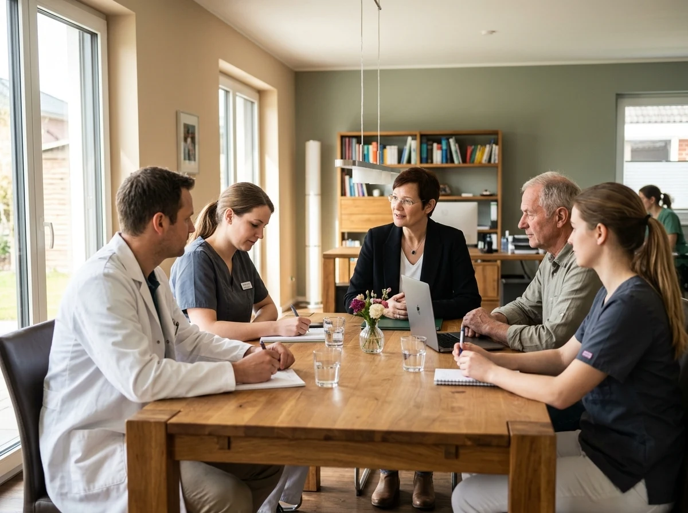

Nimm dir eine
Auszeit — und sieh
deinen Beruf aus
der Vogelperspektive.
Supervision für Tierärztinnen, Tierärzte und Teams im tiermedizinischen Kontext. Maßgeschneiderte Begleitung zu mehr Zu-FRIEDEN-heit
Kennst du diese
Momente auch?
Tierärztinnen, Tierärzte und Teams im vet.-med. Kontext arbeiten oft unter einem enormen Druck. Manches lässt sich nicht vermeiden, manches kannst Du ändern. Aber in keinem Fall musst Du da alleine durch und Du musst es auch nicht aushalten.
Fasse Dir ein Herz und schlage heute einen neuen Weg ein für mehr berufliche Zu-FRIEDEN-heit.
Die/der Tierhalter:in ignoriert deinen Rat — und das Tier leidet weiter.
Es gibt schon viel zu lange Spannungen, Streit und halb ausgesprochene Vorwürfe im Team.
Du bist mal als berufener Retter der Tiere angetreten und jetzt bleibt nur noch viel Arbeit für wenig Geld und Wertschätzung.
Kund:innen sind unpünktlich, fordern unmögliches und drohen obendrein mit einer schlechten Online-Bewertung.
Deine Vorgesetzten fordern viel, sparen aber an Wertschätzung und Wahrnehmung.
Du willst Veränderung, findest aber keinen Ansatz.
Du bist schon viel zu lange Feuerlöscher und Chaosmanager:innen.
Praxismanagement und Zeitmanagement mögen für Andere hilfreich sein, bei Dir in der Praxis scheint das alles trotzdem nichts zu bringen und Du fragst Dich warum.
„Mit etwas Abstand wird vieles klarer. Du erkennst, was festgefahren ist und verstehst, was dahintersteckt.
Abstand schenkt Dir neue Perspektiven und beflügelt Deine Fantasie. Du entdeckst Möglichkeiten, die vorher unsichtbar waren.
So wächst Dein Mut, neue Wege auszuprobieren, gelassener zu werden oder Dinge aktiv zu verändern.“
Vier Wege zu mehr Zu-FRIEDEN-heit
Wähle aus, was Dich am Ehesten anspricht.

Ein geschützter Raum…
… zur Reflexion und Verarbeitung beruflicher Belastungen, komplexer Begegnungen und emotional fordernder Situationen im tiermedizinischen Alltag. Supervision gibt es für Einzelpersonen, Gruppen oder Teams.
Mehr Infos zur Supervision anfragen →Hier kann gesagt werden, was sonst unausgesprochen bleibt
Mediation hilft Konflikte anzusprechen, sich gegenseitig zu verstehen und Lösungen zu finden und gemeinsam Vereinbarungen zu treffen. Sie ist für Tierarztpraxen und Veterinärämter mit ihren Teams. Ich/Wir arbeite/n mit Hilfe der Gewaltfreien Kommunikation (GFK).
Mehr Infos zur Mediation anfragen →

Wir sind auf dem Weg, aber wohin?
Mit Hilfe der Organisationsberatung kann ich Stärken und Schwächen Ihrer Praxis sichtbar machen. Sie können ein Motto erarbeiten, sich neue Ziele setzen, Strukturen anpassen, Stolpersteine entlarven u.v.m. — gemeinsam mit dem Team.
Mehr Infos zur Organisationsberatung anfragen →Gemeinsam Lernen
In meinen Seminaren und Workshops erwarten Dich praxisrelevante Themen — von der Kommunikation mit Tierhalter:innen, dem Umgang mit Konflikten im Team, der Entwicklung der eigenen Führungskraft bis zu psychischer Gesundheit in der Tiermedizin.
Mehr Infos zu den Seminaren anfragen →Themen, die nah am tiermedizinischen Alltag sind.
Diese können in Präsenz oder online stattfinden. Gerne können Sie mich zu folgenden oder ähnlichen Themen buchen.
Sämtliche hier aufgeführte Themen können auch im persönlichen Einzelgespräch bearbeitet werden.
Für Menschen, die Verantwortung tragen.
Meine Arbeit richtet sich an Menschen, die in der Tiermedizin viel leisten und dabei nicht den Kontakt zu sich selbst, ihrem Team oder ihrem beruflichen Anspruch verlieren möchten.
Tierärzt:innen
Unterstützung im anspruchsvollen Behandlungs- und Entscheidungsalltag bei starker Arbeitslast.
Führungskräfte
Begleitung bei fordernden Leitungsaufgaben und komplexen Teamentwicklungsfragen.
Praxisteams
Förderung einer lösungsorientierten Zusammenarbeit und das Klären verdeckter Missverständnisse.
Nachwuchskräfte
Orientierung beim Berufseinstieg, zur Rollenfindung und Burnout-Prävention.
Veterinärbehörden
Supervision und Begleitung bei emotional und regulatorisch herausfordernden Aufgaben.
Organisationen
Lösungen für wissenschaftliche Institute, Kammern und tiermedizinische Verbände.

Ich begleite Menschen mit Klarheit, Struktur und Einfühlungsvermögen.
Mir ist bewusst, dass Du mit eigenen Bedürfnissen, Eigenheiten und Grenzen kommst – und dass diese im Arbeitsalltag nicht einfach verschwinden. Du begegnest bei der Arbeit unterschiedlichen Menschen, die auch alle gesehen werden wollen.
In meiner Supervision schaffe ich einen Raum, in dem genau das möglich wird: Ich höre zu, frage nach und stelle auch unerwartete, manchmal provokante Fragen, die Dir neue Perspektiven eröffnen. Ich gebe keine schnellen Antworten, sondern unterstütze Dich dabei, die eigene Situation wirklich zu verstehen.
Dabei verbinde ich meine Erfahrung als Tierärztin mit Supervision, Mediation, Kommunikation und Erwachsenenbildung. Mein Ziel ist, dass Du Dich ernst genommen fühlst und gleichzeitig wieder Orientierung bekommst und konkrete nächste Schritte erkennst – klar, wertschätzend und wirksam.
Tierärztin und
Supervisorin.
Begleitung in stürmischen Zeiten
Ich kenne die Bedingungen, unter denen Du arbeitest - die schwierigen Tierhalter:innen, die Teamkonflikte, den Führungsdruck, das Burnout-Risiko. Und ich kann Dich als Coach und Supervisorin individuell nach Deinen Bedürfnissen begleiten. Meine doppelte Perspektive ermöglicht tiefes Verstehen ohne lange Erklärungen.
- • Tierärztin · Tierärztliche Hochschule Hannover (TiHo)
- • Zertifizierte Supervisorin · Leibniz Universität Hannover · IACC-anerkannt
- • Zertifizierte Mediatorin BM ® mit GfK nach Marshall Rosenberg · Schule für Mediation in Steyerberg
- • Zertifizierte Erwachsenenbildnerin · Hochschuldidaktik TU · Braunschweig
Echtes Feedback aus der Praxis
Transparenz und Vertrauen: Authentische Bewertungen direkt über Google.
„Frau Dr. Campe überzeugt durch ihr tiefes veterinärmedizinisches Verständnis, ihre empathische Art und zielgerichtete Lösungsansätze für unser Praxisteam.“
Verifizierte Google-Rezension · Praxis für Supervision & Mediation Dr. Amely Campe
Der erste Schritt ist ein Gespräch.
Wenn Du merkst, dass ein Thema Dich, Dein Team oder Deine berufliche Situation beschäftigt, nimm gerne Kontakt mit mir auf.
Meine HomeBase ist Staffhorst — mein räumlicher Schwerpunkt liegt auf Niedersachsen und den angrenzenden Bundesländern, bei Bedarf bin ich auch gerne überregional für Dich da. Ich arbeite sowohl online als auch in geeigneten Räumlichkeiten in Deiner Nähe oder direkt vor Ort in Deiner Praxis oder in Deinem Amt.